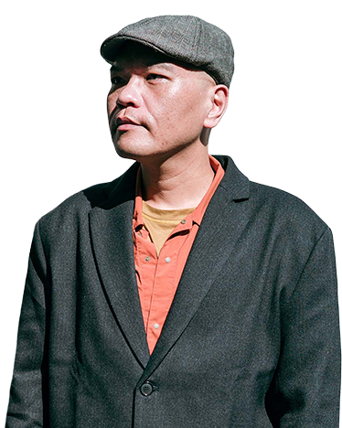
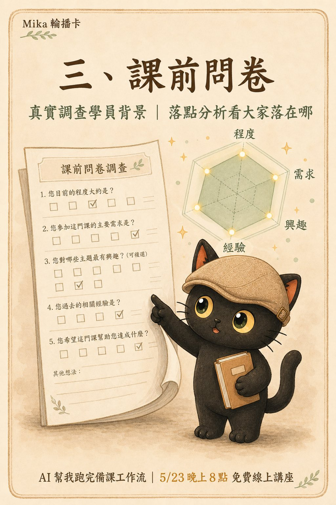
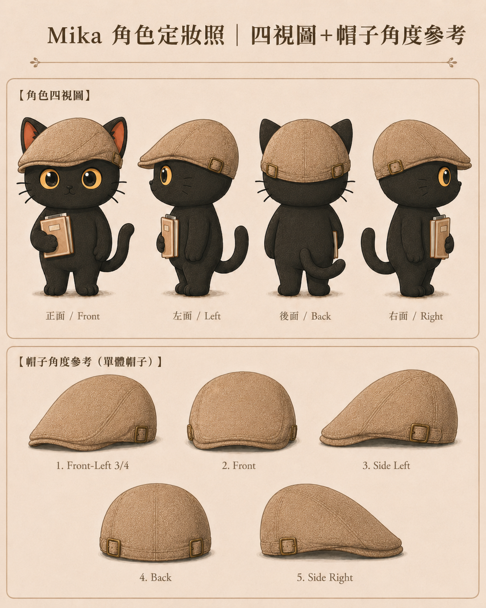

八階段流程,從一篇貼文到一份技能包
講者:江江教練
身份:隱性知識提煉師
場次:2026.05.23(六) 20:00 免費線上講座
隱性知識提煉師 ／ 知識工作者的 AI 應用
協助專業人士,只需會寫文件跟分類資料夾,
就能打造自己的 AI 助理 與 知識庫。
用 AI 放大你的亮點。

多代理交叉,讓子代理跑不同立場,自己不被偏好帶偏
(輪播卡 ACT 03 主視覺)
Codex 派子代理跑官方、正面、負面三組獨立觀點,自己只看交叉比對結果。
讓 Codex 直接抓 NotebookLM 內容回本地。社群套件 notebooklm-mcp,把外部資料變成本地素材。
Chrome 外掛,在 YouTube 影片頁面一鍵把影片送進 NotebookLM 當 source。
# 標準呼叫(3 代理,預設角度:官方/正面/負面)
_agent/skills/multi-ai-dispatcher/scripts/multi-search.sh "搜尋主題"
# 換角度(自訂)
_agent/skills/multi-ai-dispatcher/scripts/multi-search.sh \
--angles "技術,商業,法規" "搜尋主題"硬規則:每個代理只做「找資料、列來源、摘錄原文」,沒有來源不准輸出,找不到就明說「無資料」。
我已經把這條工作流包成公開版技能包 notebooklm-connector(MIT 授權,可自由使用)。
讓 Codex CLI 與 Claude Code 透過 MCP 直接連到你自己的 Google NotebookLM 做問答查詢。下載丟給 Claude Code 或 Codex 即可完整設定。
這兩個都是社群套件,不是官方授權,自己斟酌使用。
三個風險:
建議用備用 Google 帳號跑,不要裝在主力帳號。
備課從「製造素材」變成「整理素材」
(輪播卡 ACT 04 主視覺)
平時累積 + 紀錄 + 標籤整理 + 定時總結 = 穩定的靈感爆發
靈感、回饋、別人的一句話、看到的觀點,立刻寫下來。順便記「為什麼當下覺得有東西」。
當下用對的標籤(例如 wiki-link「講師工作流」「2026-0523 課程」)連回未來那場講座。標籤是穿針引線的繩子。
養成節奏,例如每月辦兩次免費講座,半個月就會自動統整一次。資料不會拖太久。
真實需求調查法 + 學員落點分析

(輪播卡 ACT 05 主視覺)
不問「想學什麼」,問「你現在卡在哪一步」。學員自己也未必知道想學什麼,但知道卡在哪。
🔗 real-needs-investigation(已開源獨立技能包,直接下載丟給 Claude Code 或 Codex 即用)
把問卷答案丟進落點分析技能包,看大家落在哪個程度、哪種需求。備課從假設變成有依據。
社群輪播卡設計流程 + 分鏡腳本 + 品牌設定
(輪播卡 ACT 06 主視覺)
主場流程:先寫文案,寫完文案再生成分鏡腳本,最後才生圖。文案是骨幹,分鏡是橋樑,圖是肉。
插畫不是好看,是要幫助大家理解知識。插畫亂、眼花撩亂、壓縮文字空間,都是反例。底下附範例。
有品牌形象就做三視圖。每次生圖記得重丟一次品牌設定,否則會跑掉。
📎 分鏡腳本範例(卡 02 補充):
看咪卡的姿勢就懂這張圖在講什麼:手伸進電腦代表桌面版 Agent,腦袋連雲端代表模型還跑雲端。
一張圖傳達一個觀念。這就是「分鏡腳本要有意義」的範例。
📎 品牌設定:Mika 四視圖範例(卡 03 補充)

四視圖(正面/左/後/右)加上配件單獨多角度,把品牌形象所有細節定死。
生圖時把這張定稿照丟給 AI 當參考,風格才不會每次跑掉。咪卡的耳朵、帽子鬆緊度、書本拿法、毛色,都鎖死在這張圖。
關鍵指令(每次生圖前重貼):
用標籤快速統整 + 順稿 + 新手模擬器
(輪播卡 ACT 07 主視覺)
備課當天打開講座的檢索頁,用 backlinks 反向追蹤標籤(例如「講師工作流」、「2026-0523 課程」),所有平時累積的靈感、工作日記、半成品文章一鍵聚成一束。
把素材順成講稿。AI 負責語感、節奏、過渡,自己負責立場跟取捨。
讓 AI 扮新手試學員會卡在哪。已收進 teaching-monitor 技能包 references/08-beginner-simulator.md。新手課程不確定性高,先模擬一輪可以省一半現場時間。
簡報 → 網頁一鍵化(你現在看的這份就是示範)
(輪播卡 ACT 08 主視覺)
用我自己的 webpage-builder 技能包做。一頁一個流程,章節清楚分隔,搭配字級調整、dot 導航。
⚠️ 個人使用授權,非商用。技能包目前自用版,公開版規劃中。
想要這種上課簡報造型?直接給 AI 看這頁網頁,叫它模仿就行。配色、字體、結構你可以自己再改。
公開簡報直接推 GitHub Pages(免費、可被搜尋)。會議紀錄、客戶報告類含敏感內容的,走 Vercel 半私密部署(網址不好猜 + noindex)。
逐字稿三層次 + 教學手冊 + 學員提問入庫
(輪播卡 ACT 09 主視覺)
超詳細/很詳細/1比1 三個等級。包含洞察層:看我哪裡上得不好、哪裡可以優化。
把講師講義整理成可以給別人接手教的教學手冊。下次同主題課直接複用。
每個學員提問建一張卡,連回下次同主題課的檢索頁。學員問題變下次備課的最佳素材。
觀念:脈絡很重要,細節更重要。
無腦叫 AI 整理重點摘要,會把真正可以輔助決策的關鍵字、關鍵指標全部洗掉。逐字稿三層次的目的,就是把這些細節保留下來。
技能包沉澱 + 卡片化重組
(輪播卡 ACT 10 主視覺)
一次成功的操作 → 寫成技能包 → 下次叫名字就用。從「我會」變成「Agent 也會」。
卡片化的知識,按下一場課的需求重新排列組合。同樣的內容,給不同對象有不同講法。
我今天講的是流程不是細節。聽完之後,有兩條路接下去。
我花一小時站在這裡,真正在做的事情是累積信任,讓你知道這份簡報裡是什麼。懶人聽的話,直接把這份簡報丟給 AI,叫它幫你檢查。
這是江江教練的「講師的 Agent 工作流」簡報。
我的角色與工作流是:[簡述你自己的角色、目前工作流]。
請幫我檢查這份簡報:
1. 哪些步驟我用得到,哪些用不到?
2. 哪些跟我現有的工作流程有衝突?
3. 我要怎麼改成我自己的版本?
4. 我要怎麼把它融入我目前的工作流?
5. 有什麼風險、引誘、衝突,幫我先標出來。江江教練的 AI 辦公室建置(零基礎超新手實作場)
你下載,它做事。
帶你搭配 Codex,把自己的 AI 辦公室搭建起來。
📅 時間: 2026/05/24(日)14:00–17:00
💰 價格: NT$1,000 付費課程
🎥 上課 2 小時 + 實作 1 小時 · 現場錄影 · 課程回放
🎯 對象: 零基礎超新手實作場
⚠️ 報名前先確認電腦可以裝 Codex,確定能裝再來上課
🔗 Codex 確認:https://openai.com/zh-Hant/codex/
🎟️ 報名:https://portaly.cc/Jiang_Yude/product/Kky899Ov7vktlo1zW6Hy
你只要知道一個步驟怎麼叫 AI 做,全部步驟你就都會叫了。